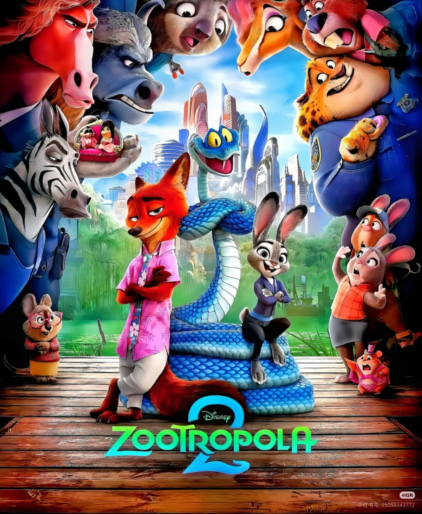
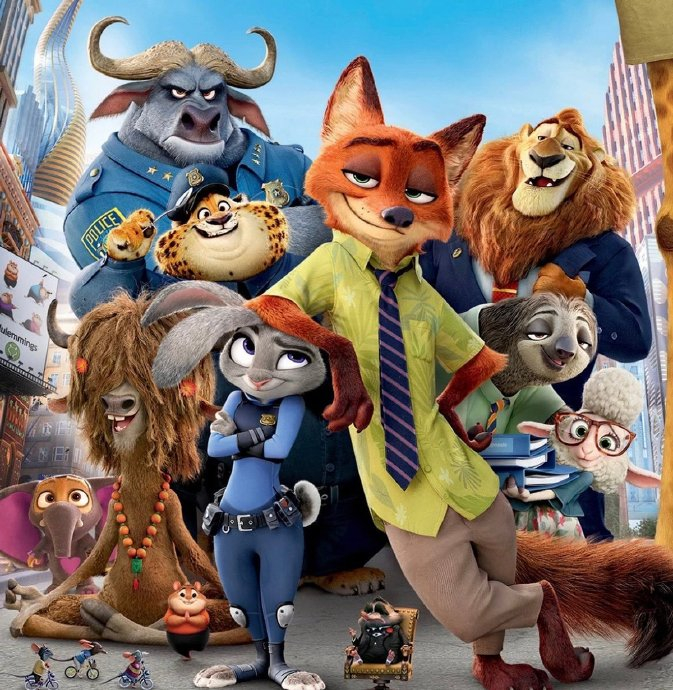
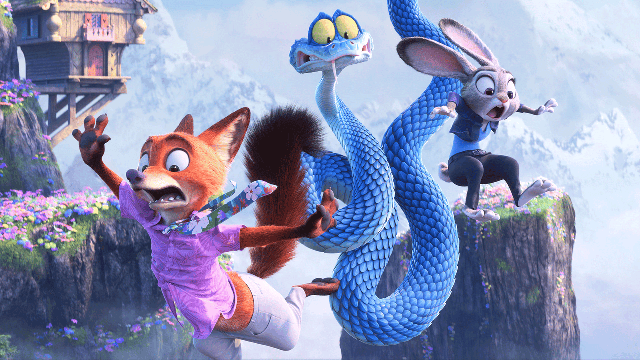
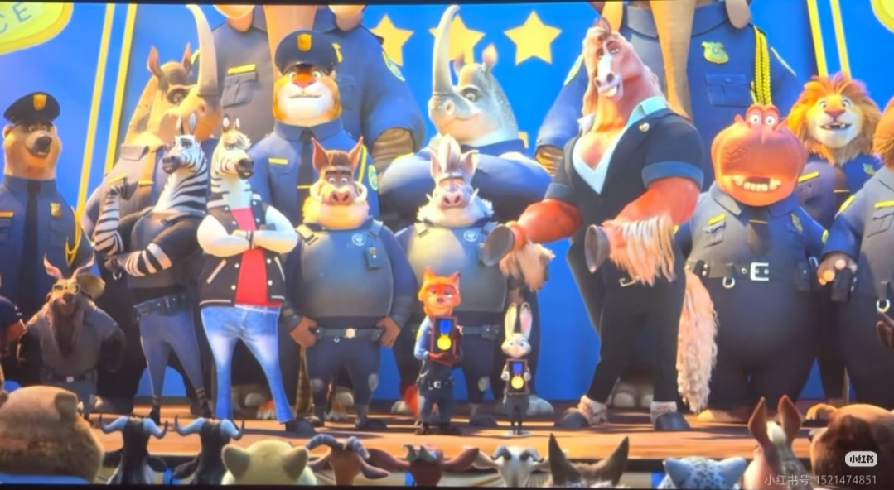

故事架构：精巧探案与深刻隐喻的完美融合
1. 主线剧情：从个体偏见到系统性不公
《疯狂动物城 2》以动物城建城百年庆典为叙事背景，将朱迪与尼克的探案冒险推向了更宏大的社会议题层面。影片不再局限于个体偏见的破除，而是直击制度性不公的核心——当记载"气候墙"核心技术的古籍离奇失窃，这对最佳搭档不仅要面对破案期限的压力，更要揭开一段被刻意掩埋的黑暗历史。
- 表层冲突：朱迪因办案方式激进被警局施压，若无法在72小时内找回失窃古籍，她与尼克的搭档组合将被强制拆分；
- 中层真相：失窃案牵出爬行动物被驱逐的百年冤案，所谓"生态安全"的驱逐理由，实则是哺乳动物权贵阶层的资源垄断手段；
- 深层内核：林雪猁家族凭借气候墙专利掌控全城能源分配，将爬行动物排除在资源体系之外，构建了看似和谐实则割裂的动物城秩序。
"真正的平等，不是少数人的施舍，而是所有人的权利" —— 朱迪·霍普斯

朱迪与尼克调查古籍失窃案

闪电树懒的经典慢动作名场面
2. 叙事技巧：节奏明快，伏笔精妙
影片延续了前作的叙事魅力，将多种类型片元素无缝融合，打造出层次丰富的观影体验。编剧团队在案件推进中埋设了多处精巧伏笔，让看似无关的细节最终形成完美闭环。
- 喜剧巧思：保留闪电树懒的慢动作反差萌、树袋熊法官的方言口音等经典笑点，新增蛇盖瑞的社恐式幽默，用动物特性制造自然笑料；
- 悬疑构建：古籍失窃现场的"温度异常"线索、爬行动物留下的特殊鳞片、猞猁家族的反常举动，层层线索指向最终真相，推理逻辑严密；
- 情感表达：朱迪的职业理想与现实妥协的挣扎、尼克从玩世不恭到承担责任的转变、爬行动物对家园的渴望，多线情感交织且真实可感。
3. 叙事局限：套路化与角色简化
尽管整体叙事完成度极高，《疯狂动物城 2》仍存在部分遗憾，相较于前作的突破性，续作在角色塑造和冲突设计上略显保守。
- 反派扁平化：林雪猁家族的动机仅停留在利益层面，缺乏绵羊副市长那样复杂的心理层次，善恶对立过于鲜明；
- 转变突兀性：马市长从权力傀儡到正义觉醒的转变缺乏足够铺垫，关键抉择显得仓促且缺乏说服力；
- 冲突合理性：哺乳动物与爬行动物的对立缺乏生物学和生态学基础支撑，更多依赖剧情强行设定，不如食肉/食草动物的冲突那样具有天然说服力。

林雪猁家族掌控气候墙专利
4. 剧情高光时刻
影片仍有多处堪称经典的叙事高光，这些名场面不仅成为了《疯狂动物城》系列的标志性镜头，更将影片的主题表达推向了新高度，成为系列又一里程碑式的创作：
- 朱迪在爬行动物地下社区的独白振聋发聩，成为全片核心金句，深刻诠释了平等与包容的主题；
- 尼克用狐狸的智慧破解气候墙密码，这一情节不仅展现了角色的成长弧光，更体现了不同物种间的信任与合作；
- 百年庆典上的集体和解场面堪称神来之笔，视觉特效与情感表达达到完美融合，形成全片最动人的情感高潮。

动物城百年庆典和解名场面